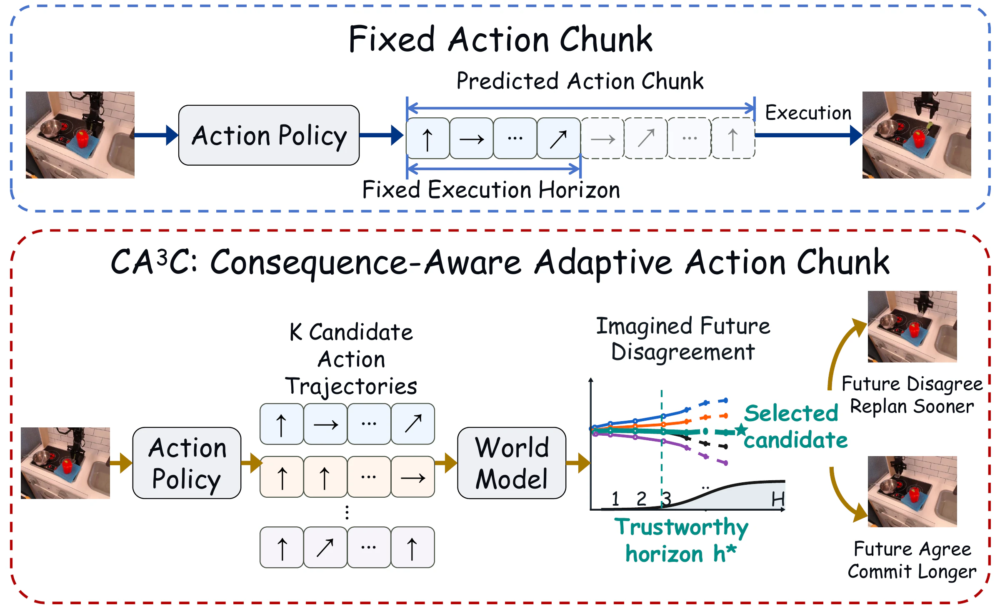
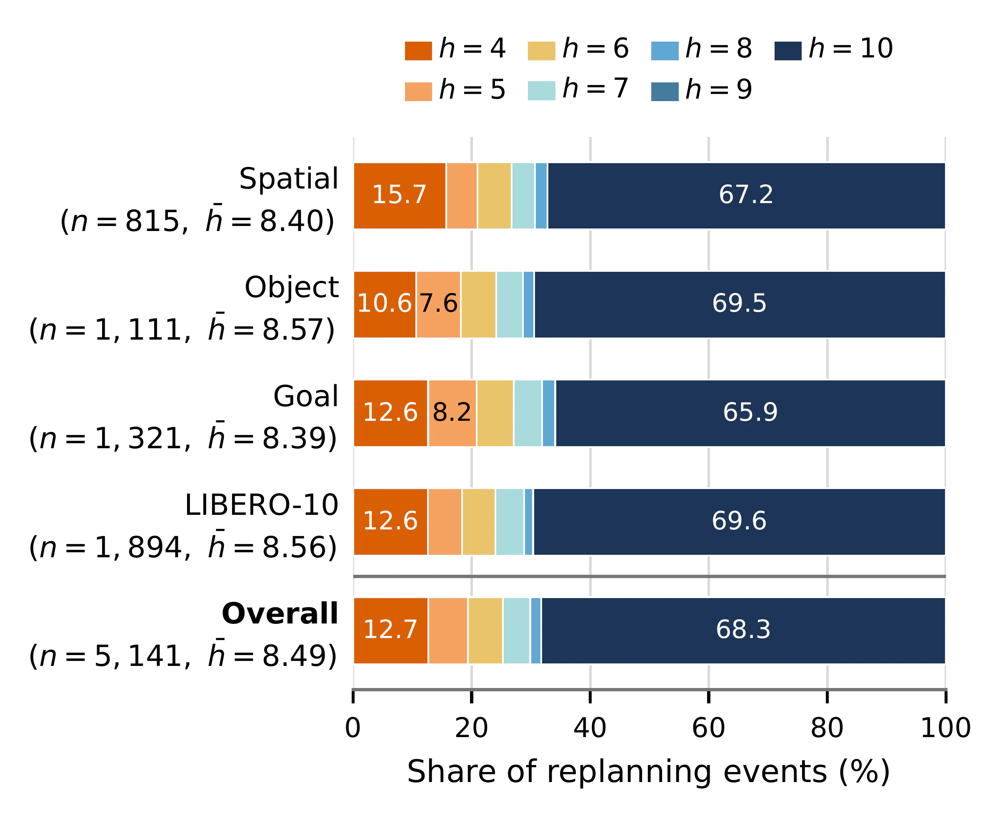
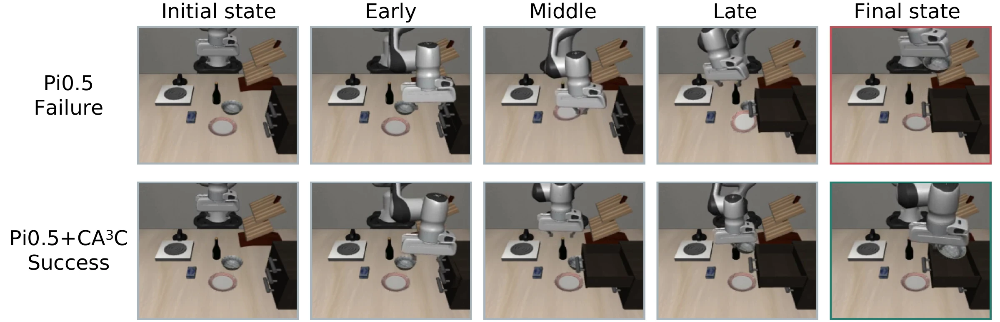
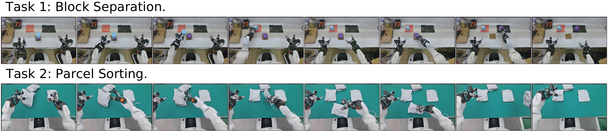

ROBOT MANIPULATION · 2026
Commit While Futures Agree
Consequence-Aware Adaptive Action Chunking for Robot Manipulation
- 1The Hong Kong University of Science and Technology (Guangzhou)
- 2ANU Intelligent
- 3Victoria University of Wellington
- 4The Hong Kong University of Science and Technology
- 5Southern University of Science and Technology
- *Corresponding author

OVERVIEW
How much of an action chunk should a robot commit to?
Action-chunking policies predict several control steps at once, and most systems then execute a fixed-length prefix before replanning, as if the same horizon were trustworthy in every state. Consequence-Aware Adaptive Action Chunking (CA3C) decides it at each replanning point instead. An action-conditioned world model imagines the futures of several candidate chunks; the robot commits while those futures agree and replans when they diverge. The base policy is neither modified nor retrained.
-
01
Consequences, not actions
Different actions can lead to the same successful outcome, and similar actions near contact can lead to different futures. Commitment is decided by agreement among imagined futures, not by similarity in action space.
-
02
Inference-time only
Neither the policy nor the world model is updated. The only requirement on the policy is that it can produce multiple plausible action chunks under the same condition.
-
03
No task-specific threshold
Where to stop is a Bayesian change-point decision on the disagreement curve. A shorter prefix is chosen only when the evidence for a change point justifies it.
METHOD
Commit while imagined futures agree, replan when they diverge
At every replanning point the frozen policy samples several candidate action chunks. The world model predicts the latent future of each one, CA3C finds where those futures start to disagree faster, and the robot executes the candidate closest to their consensus up to that boundary.

-
Candidate chunks
The policy samples K = 3 candidate action chunks under the same observation, robot state and instruction.
-
Paired imagined futures
The world model, adapted from IRASim, predicts each candidate's future latents from the same sampling noise, so the futures differ only through the proposed actions.
-
Trustworthy horizon
Disagreement among the futures is measured as a share of total predicted scene change. The Bayesian information criterion compares a single trend against one with a change point; without support for a change point, the longest valid prefix is executed.
-
Future-consensus selection
Among the candidates, the one whose imagined future is closest to the others over the selected prefix is executed: a representative consequence rather than an extreme one.
RESULTS
Three simulation benchmarks, four base policies, one real robot
CA3C is added to released, benchmark-fine-tuned checkpoints of GR00T N1.7, π0 and π0.5 on LIBERO, LIBERO-Plus and RoboCasa Kitchen, and to ACOT on an AgiBot G2. All values are success rates; every comparison is against the same policy without CA3C.
- LIBERO-Plus · π0.5 · Object
- 71.8%
- Relative reduction in failure rate, the largest reported: success rises from 88.3% to 96.7%. Table 2.
- LIBERO-Plus · GR00T N1.7
- 79.0%
- Average success over 24 tasks, up from 45.8% for the policy alone. Table 2.
- Real world · AgiBot G2
- 72.0%
- Average success over two tasks with ACOT, up from 67.0%; 50 rollouts per task. Table 6.
- Retraining
- None
- Four base policies are used as released: GR00T N1.7, π0, π0.5 and ACOT.
LIBERO-Plus
CA3C improves all three policies on all four suites. Average failure rate falls by 61.3% for GR00T, 30.5% for π0 and 45.4% for π0.5, relative to each baseline.
Table 2 of the paper: success rates (%) on 24 LIBERO-Plus tasks. Each suite contains three Robot Initial States tasks and three Objects Layout tasks and is evaluated with 120 rollouts. Brackets: change from the baseline, in percentage points.
| Method | Spatial | Object | Goal | L-10 | Avg. |
|---|---|---|---|---|---|
| GR00T | 47.5 | 48.3 | 45.8 | 41.7 | 45.8 |
| GR00T + CA3C | 86.7 (+39.2) | 80.8 (+32.5) | 68.3 (+22.5) | 80.0 (+38.3) | 79.0 (+33.2) |
| π0 | 75.0 | 60.8 | 60.0 | 75.8 | 67.9 |
| π0 + CA3C | 75.8 (+0.8) | 80.8 (+20.0) | 60.8 (+0.8) | 93.3 (+17.5) | 77.7 (+9.8) |
| π0.5 | 93.3 | 88.3 | 73.3 | 97.5 | 88.1 |
| π0.5 + CA3C | 96.7 (+3.4) | 96.7 (+8.4) | 80.8 (+7.5) | 100.0 (+2.5) | 93.5 (+5.4) |
LIBERO, in and out of distribution
The out-of-distribution setting enlarges object initialization ranges by 3–9 cm. Average failure rate there falls by 3.5–17.1% relative to the baselines. In distribution, where the baselines are already high, GR00T's average is unchanged and both π policies improve.
Table 1 of the paper: success rates (%) on LIBERO, in distribution (ID) and out of distribution (OOD). L-10: LIBERO-10. Brackets: change from the baseline, in percentage points.
| Method | ID | OOD | ||||||||
|---|---|---|---|---|---|---|---|---|---|---|
| Spatial | Object | Goal | L-10 | Avg. | Spatial | Object | Goal | L-10 | Avg. | |
| GR00T | 99.00 | 98.00 | 98.00 | 95.00 | 97.50 | 47.00 | 50.00 | 42.00 | 63.00 | 50.50 |
| GR00T + CA3C | 98.00 (−1.00) | 98.00 | 98.00 | 96.00 (+1.00) | 97.50 | 50.00 (+3.00) | 52.00 (+2.00) | 42.00 | 65.00 (+2.00) | 52.25 (+1.75) |
| π0 | 95.00 | 99.00 | 97.00 | 77.00 | 92.00 | 48.00 | 67.00 | 48.00 | 61.00 | 56.00 |
| π0 + CA3C | 94.00 (−1.00) | 99.00 | 95.50 (−1.50) | 87.50 (+10.50) | 94.00 (+2.00) | 48.00 | 77.00 (+10.00) | 51.00 (+3.00) | 65.00 (+4.00) | 60.25 (+4.25) |
| π0.5 | 97.00 | 99.00 | 96.00 | 95.00 | 96.75 | 74.00 | 87.00 | 76.00 | 78.50 | 78.88 |
| π0.5 + CA3C | 99.00 (+2.00) | 99.00 | 98.00 (+2.00) | 95.00 | 97.75 (+1.00) | 76.00 (+2.00) | 90.00 (+3.00) | 80.00 (+4.00) | 84.00 (+5.50) | 82.50 (+3.62) |
RoboCasa Kitchen
Average failure rate falls by 11.6% for GR00T, 4.6% for π0 and 7.0% for π0.5, relative to each baseline.
Table 3 of the paper: success rates (%) on 24 RoboCasa Kitchen tasks. Relocation, Container, Rotation and Button contain 10, 6, 5 and 3 tasks; each task is evaluated with 20 rollouts. Brackets: change from the baseline, in percentage points.
| Method | Relocation | Container | Rotation | Button | Avg. |
|---|---|---|---|---|---|
| GR00T | 54.0 | 80.8 | 77.0 | 96.7 | 70.8 |
| GR00T + CA3C | 57.5 (+3.5) | 85.0 (+4.2) | 81.0 (+4.0) | 96.7 | 74.2 (+3.4) |
| π0 | 19.0 | 55.8 | 46.0 | 56.7 | 38.5 |
| π0 + CA3C | 21.0 (+2.0) | 58.3 (+2.5) | 49.0 (+3.0) | 61.7 (+5.0) | 41.3 (+2.8) |
| π0.5 | 44.0 | 59.2 | 59.0 | 60.0 | 52.9 |
| π0.5 + CA3C | 46.0 (+2.0) | 63.3 (+4.1) | 62.0 (+3.0) | 66.7 (+6.7) | 56.2 (+3.3) |
Real robot
On an AgiBot G2 with ACOT as the base policy, Block Separation separates two stacked blocks into distinct target areas, and Parcel Sorting transfers a parcel to a conveyor, flipping it first if its QR code faces down. Average success rises from 67.0% to 72.0%, a 15.2% relative reduction in failure rate.
Table 6 of the paper: success rates (%) on real-world tasks using AgiBot G2, 50 rollouts per task for each method. Brackets: change from the baseline, in percentage points.
| Method | Block Separation | Parcel Sorting | Avg. |
|---|---|---|---|
| ACOT | 78.0 | 56.0 | 67.0 |
| ACOT + CA3C | 82.0 (+4.0) | 62.0 (+6.0) | 72.0 (+5.0) |
How the horizon moves within an episode
In the episode below the selected horizon moves between 4 and 10 across coarse approach, fine grasp alignment, transport and door closing, where the baseline always executes 5 steps. Over 5,141 replanning events on LIBERO-Plus with the horizon-only variant, the full horizon of 10 is the most frequent choice in every suite, and 31.7% of decisions select a shorter horizon between 4 and 9.
![Panel a: the selected commitment horizon h* over about 260 environment timesteps of one simulated episode, stepping between 4 and 10, with a dashed line at the fixed baseline of 5 and four task stages: coarse approach (h* = 10), fine grasp alignment (h* = 4, marked A), transport to the microwave (h* = 5) and door closing (h* = 10, marked B). Panel b, decision A at t = 71: smoothed relative disagreement is flat for future steps 1 to 4 and rises from step 5, so four steps are executed before replanning. Panel c, decision B at t = 259: disagreement stays low for all ten steps, so the full chunk is executed.](assets/media/adaptive-commitment.webp)

Ablations and scope
With π0.5 on LIBERO-Plus, adaptive horizon estimation alone gives a 26.9% relative reduction in failure rate; consensus selection alone does not improve the fixed-horizon baseline; the two together reach 45.4%. Fixed horizons of 8 and 10 also beat the default of 5, but neither is best across all suites (Tables 4 and 5 of the paper).
The paper states the conditions: CA3C needs a generative policy with meaningful candidate diversity and an action-sensitive world model, and imagining futures adds inference cost.
ROLLOUTS
Execution examples from the paper
Still frames from two figures of the paper: a matched pair of simulated rollouts, and the two tasks run on the real robot.


CITATION
@misc{li2026commit,
title={Commit While Futures Agree: Consequence-Aware Adaptive Action
Chunking for Robot Manipulation},
author={Yuyan Li and Yujia Wang and Yusong Huang and Junjie Yang and
Yanggang Sheng and Ziyi Shi and Wenpeng Xu and Xiaoyang Zhou and
Haoang Li and Hongliang Lu and Xinhu Zheng},
year={2026},
eprint={2610.07949},
archivePrefix={arXiv},
primaryClass={cs.RO},
url={https://arxiv.org/abs/2610.07949},
}